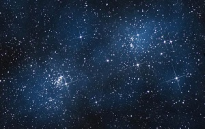

Звезда е небесно тяло, представляващо голямо кълбо газ (плазма в хидростатично равновесие), произвеждащо енергия чрез термоядрен синтез,
основно превръщане на водород в хелий. Тази енергия се разпространява в пространството под формата на електромагнитно излъчване. Звездите
в нощното небе блещукат (трептят) поради многобройните отражения и пречупвания на светлината при преминаването ѝ през земната атмосфера.
Според астрономите, познатата вселена съдържа поне 70 секстилиона звезди. Най-близката до Земята звезда е Слънцето. Светлината от него
достига до нас за 8 минути. Ако изключим Слънцето, най-близката звезда е Проксима Центавър, която е отдалечена на 40 трилиона километра.
Нейната светлина стига до Земята за 4,3 години.
Звездите играят важна роля в историята на цивилизациите по целия свят – като елемент на религиозните практики или като средство за
навигация и ориентация. Много от древните астрономи смятат, че звездите са твърдо прикрепени към небесна сфера и че са вечни и неизменни.
За удобство астрономите започват да групират звездите в съзвездия и да следят чрез тях движенията на планетите и скритото положение на
Слънцето. Движението на Слънцето, спрямо звездите и хоризонта е използвано за създаването на календари, които намират приложение в
организацията на земеделието. Григорианският календар, използван днес почти навсякъде по света, е такъв слънчев календар, базиран на
наклона на оста на въртене на Земята спрямо най-близката звезда, Слънцето.
Почти всички характеристики на звездите се определят от тяхната начална маса, включително основни свойства, като светимост и размер,
както и тяхната еволюция, продължителност на живота и крайно състояние. Много звезди са на възраст между 1 и 10 милиарда години. Някои
дори се доближават до 13,7 милиарда години, което е приблизителната възраст на Вселената. Размерът им също варира: от малките неутронни
звезди (които всъщност са мъртви звезди), не по-големи от град, до свръхгигантите като Полярната звезда и Бетелгейзе в съзвездието Орион,
с диаметър около 1000 пъти по-голям от този на нашето Слънце (1,6 милиарда километра). Температурата във вътрешността на звездите достига
милиони градуса Келвин, а на повърхността е по порядъка на няколко хиляди градуса.
Почти всички характеристики на звездите се определят от тяхната начална маса, включително основни свойства, като светимост и размер,
както и тяхната еволюция, продължителност на живота и крайно състояние. Много звезди са на възраст между 1 и 10 милиарда години. Някои
дори се доближават до 13,7 милиарда години, което е приблизителната възраст на Вселената. Размерът им също варира: от малките неутронни
звезди (които всъщност са мъртви звезди), не по-големи от град, до свръхгигантите като Полярната звезда и Бетелгейзе в съзвездието Орион,
с диаметър около 1000 пъти по-голям от този на нашето Слънце (1,6 милиарда километра). Температурата във вътрешността на звездите достига
милиони градуса Келвин, а на повърхността е по порядъка на няколко хиляди градуса.